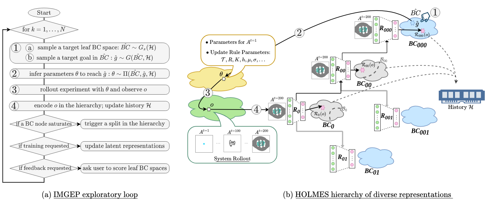

Meta-Diversity Search in Complex Systems,
A Recipe for Artificial Open-Endedness ?
The idea of the Minecraft Open-Endedness Challenge is to try and think how would we artificially approach “open-endedness” in the Minecraft environment,
put in another words it asks the question: Can we build an artificial system that would be able to generate endless surprises if runned “forever” in Minecraft?
While there is not a single path toward solving that grand challenge you’ve never heard of,
this article presents what we believe to be some working ingredients for the endless generation of novel increasingly complex artifacts in Minecraft.
Problem Formulation
Minecraft game environnement $E$ is made of $1m^3$ building blocks that players can use to construct any structure they desire (also called artifacts) with almost endless possibilities to express their creativity. The blocks exist in a spatio-temporal world which is 3-dimensional in space and where time advances with each gametick. There is a finite number of possible blocks (M=255) which are described by their type $m$ (eg: water, wood, air, etc.) and optionally by a state $s$ which further describes the block appearance (eg: texture, orientation) or behavior (eg: age, on/off state, counters).
Let’s define the spaces of our problem:
- State space $\Sigma$: each “cell” of the world (x,y,z) can take a certain state $s^t$. The visible state in the Evocraft API world is limited to the block type $j \in \{1..M\}$. The hidden state is free of choice, for instance a feature vector $h \in \mathbb{R^d}$ can be attached to each “cell” of the world and can describe concrete physical attributes of the cell at this point in space in time (eg: mass or electric currant) as well as more abstract computational quantities.
- Artifact space $A$: an artifact $a$ in Minecraft (also called phenotype) is described as a set $\{(m, x, y, z, t, s)\}$ of elemental blocks where $m$ is the block type; $(x,y,z)$ is the spatial position; $t$ is the timestep; and $s$ is the block state. In the rest, an artifact is represented by its discrete time serie $a = \{a^0, \dots, a^t, \dots\}$ (with $a^t=a^0$ for static artifacts).
- Search space $\Theta$: each artifact is the result of some sort of design or generative process where a genome $\theta$ determines the artifact initial state $a^0$ as well as the artifact development over time $(a^0, \dots, a^t) \rightarrow a^{t+1}$. The choice of the genome $\theta$ and of the generative process $G: \Theta \rightarrow A$ (also called genotype-to-phenotype mapping) will define the search space $\Theta$ and the reachable artifact space $A$ of our system.
- Solution space $W$: the solution space is set of all possible artifacts $\{a \in E\}$ which can be generated by $G$.
Following that formalism, our open-ended framework is composed of two main components:
- an artifact-generator $G: \Theta \rightarrow A$ which should allow for artifacts with unbounded phenotypic complexity.
- an artifact-discovery algorithm $D$ that evolves a set of genomes and their corresponding artifacts $\{(\theta_1, a_1=G(\theta_1)), \dots, (\theta_N, a_N=G(\theta_N))\} \in W$
($N \to \infty$ in the open-ended setting) and that should be able to continuously evolve novel and increasingly complex artifacts.
How to artificially construct the genome $\theta$, the genotype-to-phenotype mapping $G$ and to how to evolve sets of artifacts $\{(\theta,a)\} \in W$ complying with open-ended problems remains an open question to date. However, interdisciplinary research at the crossroad of complex system science, machine learning and biology seem to suggest a list of necessary “ingredients” that such a system should comply with to have the hope of exhibiting a high level of open-ended dynamics [Stanley et al., 2020]. In the next section, we present what we decided to include as desirata properties in our open-ended framework; and in the following section we propose a possible implementation of those ideas in the Minecraft environment.
Desirata Properties of our Open-Ended Framework
$G$: self-organized system for the endless generation of complex artifacts
Complex systems are good candidates of generative processes that can produce unbounded growth in complexity, where the complexity emerges from the cooperation of many entities that interact with each other and with the environment in a recursive nonlinear way.
We formulate our artifact-generator $G$ as an artificial complex system which should comply with the following general properties:
- Dynamical system — $G$ recursively applies an update rule $f$ that changes the state of the system over time.
- Growth — the inititial state $a^0$ is limited in space and complexity and the phenotype grows and complexifies over time.
- Local interactions — the update rule $f$ is defined on a local neighborhood ball and shared at the different locations.
- Non-linearity — $G$ has non-linear dynamics $f$.
- (may be) Open — G might exchange flows of matter/energy with the environment to allow high levels of diversity, heterogeneity and complexity.
- (may have a) Memory — G might memorize the system’s past states into the hidden features to allow for more advanced behaviors.
Discovered the first oblique glider rake in @conwaylife (based on a partial discovered by @inspirehep23) by running ikpx2 for 35000 core-hours on the under-utilised CPUs of a @LeaderGPU machine.
— Adam P. Goucher (@apgox) May 10, 2021
This wouldn't have been possible without @ArminBiere's SAT solvers (cadical/kissat). pic.twitter.com/wiupEPrSF9
The idea of implementing computational systems with the above desirata properties, whose complexity could grow automatically akin to real complex systems is not new.
The simulation of artificial worlds that exhibit life-like behaviors goes back to von Neumann’s seminal work on self-reproducing cellular automata in the 40’s.
and has been one of the core thematics of the Artificial Life research discipline since then.
Interestingly, von Neumann’s “proof of principle” showed that very simple machines could constitute universal constructors with very large expressive power.
30 years laters, John Conway implemented a very simple version of von Neumann’s automata, the well known Game of Life that, despite its apparent simplicity,
can generate a very wide range of life-like structures and dynamics.
Yet, even for very simple systems like Conway’s Game of Life where one fully knows the simple basic rules at the local level,
we are still far from fully grasping what structures can self-organize, how to represent and classify them, and how to predict their evolution.
As an illustration of those challenges, more than 50 years after the creation of Conway’s game of like and thanks to today supercomputer’s power,
the community is still discovering novel patterns with impressive complexity and whose existence remained unknown to date.
Therefore, a more challenging question is:
Can we automate the long-term discovery of increasingly complex and divergent structures in such systems?
In the same way that Conway’s Game of Life together with the community of people searching it might form an example of open-ended system, our open-ended framework couples the artifact-generator $G$ with an artifact-discovery algorithm $D$ able to continuously search for novel and divergent artifacts in $W$.
In the next section, we briefly present the 3 main families of methods that propose to automatically explore the input space $\Theta$ of complex systems, namely
“naive” strategies (independant of the outcomes of the system), optimization-driven strategies and diversity-driven strategies.
We review why these approaches (in their standard definition) are limited to comply with open-ended problems and rather tend to converge toward a sub-region of the possible solution space $W$.
Our artifact-discovery algorithm $D$ search objective is formulated as the meta-diversity objective, an extension of the standard diversity objective that we proposed recently
in the context of (open-ended) automated discovery in complex systems [Etcheverry et al. 2020].
$D$: meta-diversity search for the endless discovery of novel artifacts
Naive search strategy
An “naive” strategy consists of covering at best the known search space $\Theta$, for instance with grid-search or uniform sampling strategy $D: \theta \sim U(\Theta)$. While easy to implement, this is often very inefficient in covering the space of possible phenotypes, especially for complex genotype-to-phenotype developmental mappings where big regions of the input space $\Theta$ are mapped to small regions in the outcome space $A$ (we talk of “attractor” states).
Optimization search strategy
Pure objective-driven search is another widely-used discovery strategy $D$, where each discovery $a$ gets scored with a fitness function $F$ and where $D$ aims to find individuals $\{(\theta_i, a_i)\}$ with the highest fitness scores $F(a_i)$. Different objective-driven techniques have been implemented as discovery tool in complex systems such as evolutionary population-based search strategies [Nichele 2016], gradient-based search strategies (if the generator $G$ and the fitness $F$ are differentiable) [Mordvintsev et al. 2020], and reinforcement learning strategies (if the system’s dynamics $f$ integrates a differentiable policy which actions influence the system next state) [Pathak et al. 2019]. While these techniques can be very powerful optimizers toward desired artifacts [Sudhakaran et al. 2021], they tend to converge toward “peaks” regions on the artifact fitness landscape and stop here once reached, making them poor-fit for open-ended problems. Moreover, they generally suffer from deceptive rewards and are hardly generalizable to complex artifact spaces with limited predictability.
Diversity search strategy
Another family of approaches proposes to maximize the novelty of the discovered phenotypes instead of the fitness, and leverage population-based evolutionary and developmental curiosity-driven exploration methods like Novelty Search, Quality-Diversity or Intrinsically Motivated Goal Exploration Processes. Getting rid of the efficiency objective has shown to be effective at creating behavioral diversity in complex systems and a promising discovery tool [Reinke et al. 2020]. Moreover, diversity-search can be coupled with optimization-based strategies to generate a set of diverse high-performing phenotype solutions to a problem [cite]. Yet standard approaches assume that the intuitive notion of diversity can be captured within a single representation space, which is generally called $BC$ for behavioral characterization. This limits the scope of the final discoveries: in the same way that the fitness function $f$ is constraining the reached area in the observation space $A$, being diverse in a specific $BC$ does not mean being diverse in $A$. Actually, there is not such thing as a unique ground truth “interesting” diversity in complex phenotypic spaces, and operating in a monolithic BC space might lead to discoveries that are highly-diverse in that space but poorly-diverse according to other potentially-interesting behavioral criteria [Etcheverry et al. 2020].
Meta-Diversity search strategy
To address these limits, we recently formulated the problem of meta-diversity search where an artificial “discovery assistant” incrementally (i) learns a diverse set of representations to characterize behaviors in an outer loop and (ii) searches to discover diverse patterns within each of them in an inner loop. The objective of this process is to enable continuous seeking of novel niches of diversities (growing encoding capacity to characterize newly-discovered niches into divergent feature spaces) while being able to quickly adapt the search toward a new unknown type of diversity (knowledge accumulator that leverages the diverse BCs). Similarly, quality-guidance can be integrated in the framework: with minimal external feedback, a successful discovery assistant should be able to efficiently specialize the exploration strategy toward a particular type of “interesting” diversity, corresponding to the initially unknown preferences of an end-user and expressed through simple sparse feedback.
Proposed Implementation
We simulate an artificial “chemistry” system based on Lenia continuous cellular automaton [Chan 2019, Chan 2020] and an artificial “discovery assistant” (HOLMES) which integrates a goal-based intrinsically-motivated exploration (inner loop’s diversity search) with the incremental learning of a growing hierarchy of behavioral characterization spaces (outer loop’s divergent knowledge accumulator) [Etcheverry et al. 2020].
While abstracting away from natural chemistry, we follow this metaphore to illustrate our open-ended system and implementation choices for the challenge.
LeniaChem: an “artificial chemistry” system
We use a continuous CA as our toy artificial chemistry system, where the CA’s 3D grid $a^t$ represents the “petri-dish” where evolved patterns will develop in time.
The state space $\Sigma$ is represented with a multi-channel continuous array $A$ where each channel $A_j$ represent the “chemical potential” of the associated specy $j \in \{1..M\}$.
The hyper-parameters constraining the range of possible patterns are the grid-size $(S_X, S_Y, S_Z)$ (dimensions of the “petri-dish”) and
the number of channels $M$ (number of “chemical species” represented with blocks in Minecraft). The grid here is a torus, meaning that voxels on the top borders are neighbors to bottom voxels and same for left and right borders.
- a binary vector $I$ of shape $M$ which determines which channel get initialized (i.e. non-empty mass at t=0)
- Each initially-present channel $j$ ($I_j=1$) is described with:
- its occupation ratio: portion of the grid where it is present at t=0
- its cppn genome which is used to generate the initial pattern $A_j^{t=0}$
- a binary vector $C$ of shape $M^2$ which determines which species are interacting together
- Each interacting channel pair $(c_i,c_j)$ ($C_{i \rightarrow j}=1$) is described with:
- fraction $h$ of the update applied per time step (intra-specy rate of growth)
- the kernel $K$ with:
- the kernel size $R_x, R_y, R_z$ (neighborhood size)
- the cppn genome which generates the kernel matrix $K$
- the growth function mean $\mu$ and variance $\sigma$
- fraction $dt$ of the growth update applied per time step (global rate of growth)

 Following the “artificial chemistry” metaphore, we can imagine the parameters $\theta = (\psi, \phi)$ as representing the quantity and disposition of each starting material
as well as the operating conditions (temperature, pressure, pH, etc.) influencing the development of the final product.
As an example, Grizou et al. 2020 recently propose to explore the dynamics of an oil-droplet system with a “curious robot” which could manipulate the initial mixture composition of chemicals.
Following the “artificial chemistry” metaphore, we can imagine the parameters $\theta = (\psi, \phi)$ as representing the quantity and disposition of each starting material
as well as the operating conditions (temperature, pressure, pH, etc.) influencing the development of the final product.
As an example, Grizou et al. 2020 recently propose to explore the dynamics of an oil-droplet system with a “curious robot” which could manipulate the initial mixture composition of chemicals.
The resulting “artifact” here would be the yield of each compound in the final product, the rest being considered as empty “air” invisible blocks in Minecraft.
The “physics” formulas $f$ of our petri-dish follow Lenia rules [Chan 2020] and apply the following updates to the state at each time step:
- Loop on all kernel $K_{i \rightarrow j}$ and:
- calculate the weighted sums $K_{i \rightarrow j} * A_i$ with its source channel $A_i$
- Apply growth mapping to the weighted sums: $G_{i \rightarrow j} =\sum 2 \times e^{-\frac{\left((K_{i \rightarrow j} * A_i) - \mu\right)^2}{2 \sigma^2}} - 1$
- Add a small relative portion $dt * h_{i \rightarrow j}$ of the resulting growth to the destination channel:
- The potentials of each channels $A_j$ are clipped between 0 and 1
- To prevent participation of empty “air” cells in the update process we apply an alive-masking step [Mordvintsev et al. 2020] as follows: we fix the air potential (channel 0) to a fixed value 0.1 and we consider empty every location which maximum potential is lower than 0.1, by setting every channels (except air’s one) to 0.
- Finally chemical “matter” is created in zones of higher chemical potential with $a^t = \underset{j \in M}{argmax} A^t$
Example of chemical reactions from the chemical bouillon youtube channel.
Example of artifact-growth in the LeniaChem system.
Holmes: an artificial “discovery assitant” exploring the system
To solve the previously-introduced meta-diversity objective, several key challenges need to be addressed. A first challenge is to unsupervisedly learn a diverse set of representations to characterize behaviors and a second challenge is to find a diverse set of patterns in each of those BC spaces.
1) Outer-loop: incremental learning of divergent characterization spaces
To address the first challenge, we use a dynamic neural-network architecture where a hierarchy of module embedding networks $\mathcal{R}=\{\mathcal{R}_i\}$ is progressively expanded by the discovering agent
to characterize the different discovered niches of pattern. The architecture has 4 main components:
(i) a base module embedding neural network
(ii) a saturation signal that triggers the instantiating of new nodes in the hierarchy
(iii) a boundary criteria that unsupervisedly clusters the incoming patterns into the different modules
(iv) a connection-scheme that allows feature-wise transfer from a parent module to its children
In HOLMES, the clustering of the different patterns and the use of learnable connections is central to explore divergent search spaces and to aggregate the knowledge between the distributed modules. While HOLMES architecture is very general, the engineer’s choice for the module/connections training strategy and for the clustering algorithm will impact how patterns are separated and distributed into different niches, which will in turn greatly influence their “selectivity” by the population-based IMGEP.
Here, we use the same implementation choices that in Etcheverry et al. 2020:
(i) we use VAEs as base modules $\mathcal{R}_i$: the VAEs are incrementally trained to encode their own niche of patterns into a latent characterization space $BC_i$
(ii) we say that the representational capacity of a module saturates when the reconstruction loss of its VAE reaches a plateau (with additional conditions to prevent premature splitting such as minimal node population)
(iii) each time a node gets saturated, we freeze its latent space and use K-Means clustering to fit a boundary and redirect the incoming patterns (the boundary is kept fixed for the rest of the exploration)
(iv) we instantiate learnable layers called “lateral connections” between the parent and child VAE feature-maps allowing the child VAE to reuse its parent knowledge while learning to characterize novel dissimilar features in its own BC space
2) Inner-loop: find a diverse set of patterns in each characterization space
A goal-based intrinsically-motivated exploration process (IMGEP) is used for the parameter sampling strategy. The IMGEP operates in the hierarchy of goal spaces ${BC_i}$ as defined by HOLMES embedding hierarchy ${\mathcal{R}_i}$.

The exploration process iterates through steps 1-to-4 as illustrated in the above figure:
(i) sample a target BC space and a target goal in it (the sampling strategy here is equivalent to Novelty Search)
(ii) sample a set of parameters for the next rollout to achieve that goal (here nearest neighbour + mutation)
(iii) let the system rollout and observe the outcome artifact
(iv) store the resulting (parameter, observation, encodings) triplets in an explicit memory (growing archive of all discoveries).
Resulting Discoveries
Filter
Discussion
References
- K. Stanley, J. Lehman, L. Soros - Open-endedness: The last grand challenge you’ve never heard of - 2017
- J. Bongrad, M. Levin - Living Things Are Not (20th Century) Machines: Updating Mechanism Metaphors in Light of the Modern Science of Machine Behavior - 2020
- S. Nichele, A. Giskeødegård, G. Tufte - Evolutionary Growth of Genome Representations on Artificial Cellular Organisms with Indirect Encodings - 2016
- B. W-C. Chan - Lenia - Biology of Artificial Life - 2019
- B. W-C. Chan - Lenia and expanded universe - 2020
- P. Dittrich , J. Ziegler , W. Banzhaf - Artificial Chemistries - A Review - 2001
- M. Etcheverry, C. Moulin-Frier, P-Y. Oudeyer - Hierarchically Organized Latent Modules for Exploratory Search in Morphogenetic Systems - 2020
- A. Mordvintsev, E. Randazzo, E. Niklasson, M. Levin - Differentiable Self-organizing Systems - 2020
- D. Pathak, C. Lu, T. Darrell, P. Isola and A. A. Efros - Learning to Control Self-Assembling Morphologies: A Study of Generalization via Modularity - 2019
- S. Sudhakaran, D. Grbic, S. Li, A. Katona, E. Najarro, C. Glanois, S. Risi - Growing 3D Artefacts and Functional Machines with Neural Cellular Automata - 2021